Home / Age of Contact and Craft / Northern and Eastern Europe
Encyclopedia ID 472
Letter Categories
Also known as Stadt Land Fluss, Basta, Tutti Frutti, Petit Bac, Adedonha · Name Place Animal Thing · Basta · Stadt Land Fluss
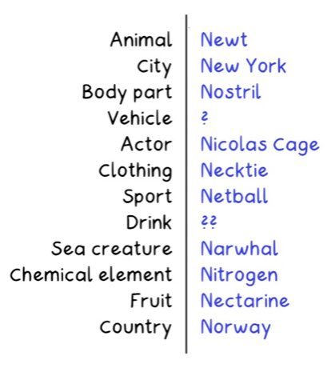

A random letter is drawn and players race to fill category boxes (country, animal, name, etc.) with words starting with it; unique answers score most.
Heritage note
Part of the living heritage of Germany, India, France. Animals are partners in this tradition; good care and local rules always come first.
Origins
Usually placed in the era of Age of Contact and Craft (about 1500 to 1800), although its exact origins are uncertain, within the cultural world of Northern and Eastern Europe.
Sources
Related entries
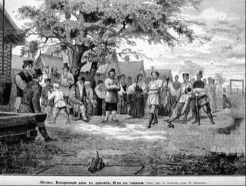
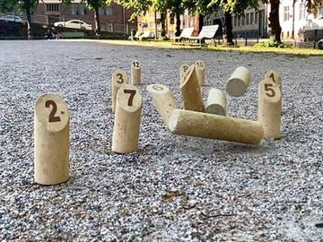
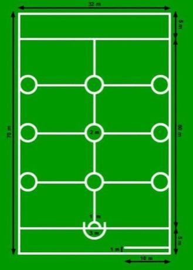
Oina
Romania · Bat-and-ball games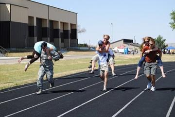
Partner-Carry Obstacle Race
Finland · Racing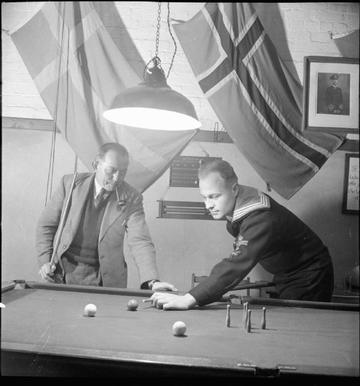
Danish pin billiards
Denmark · Street and playground games
More from Germany
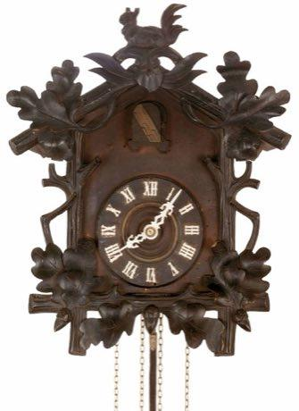
Black Forest Cuckoo Clock Workshop
Germany · Crafts and making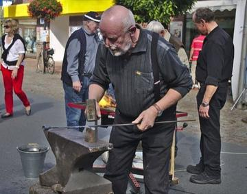
Blacksmith's Forge
United Kingdom +4 · Crafts and making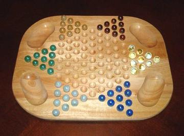
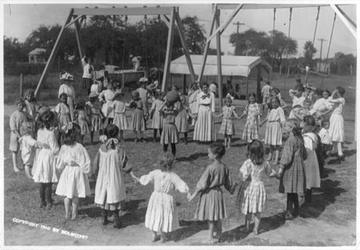
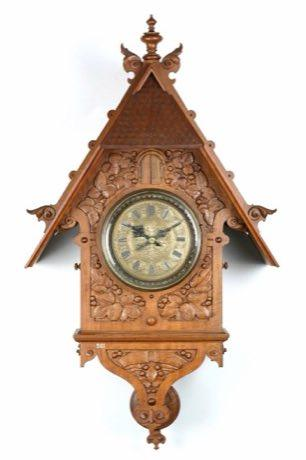
Clockwork Movement Builder
Germany +2 · Puzzles and mind games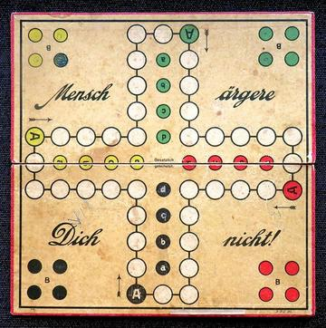
Don't Get Angry
Germany · Board and table games